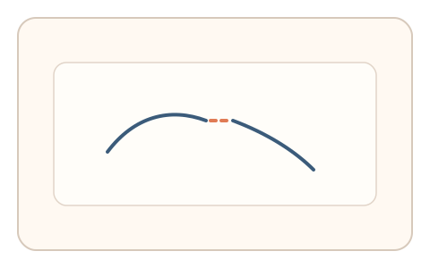
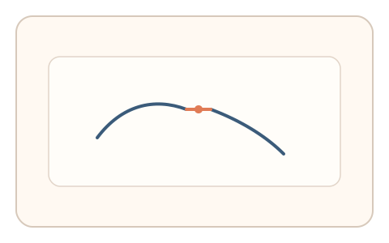
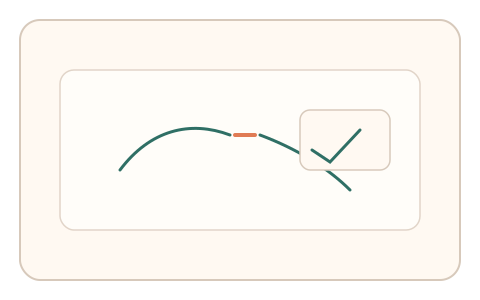

#38
视觉思考范式：时域/适应/残影
已扩展
断裂补全延迟
断裂轮廓短闪后消失，记录心理补全的方向与描绘速度作为补全偏差信号。
概念原文
断裂轮廓闪现后消失，用户快速描出“心理补全的那段”。记录补全方向、长度与速度。
利用人类补全偏差与描绘节奏。
研究背景
视觉系统会对断裂轮廓进行补全，形成主观连续的形状。补全方向与长度存在稳定偏差，可通过描绘节奏与路径特征提取行为签名。
核心机制
- 断裂轮廓短时闪现后立即消失。
- 用户快速描绘他们认为的补全段。
- 记录补全方向、长度与描绘速度。
- 分析补全偏差与节奏特征。
用户流程
- 步骤 1：用户看到断裂轮廓闪现。
- 步骤 2：图形消失后用户描绘补全段。
- 步骤 3：系统分析补全特征并判定。
判定信号
补全方向与长度分布
人类补全具有稳定的方向与长度偏差。
描绘速度与起笔延迟
真实补全会在短暂思考后快速描绘。
判定逻辑
评估补全方向、长度与描绘时序是否落在人类范围；过度精确或随机化判异常。
对抗面
- 脚本基于几何规则直接补全
- 重放真实用户的描绘轨迹
防御与缓解
- 随机化断裂形态与方向，避免固定几何解
- 引入轻微噪声与遮罩增强不确定性
- 叠加微时序与轨迹抖动进行多信号判定
可达性与风险
提供点击选择补全方向的替代模式，减少精细描绘负担。
- 对形状知觉差异导致补全偏差
- 触控设备描绘精度影响特征稳定性
可视化状态

状态 1：断裂轮廓
断裂轮廓短时闪现。

状态 2：补全描绘
用户描绘心理补全段。

状态 3：补全判定
分析补全方向与速度。
参考资料
Perceptual completion
说明视觉补全与虚假轮廓现象。
Gestalt psychology
说明补全作为整体知觉原则。